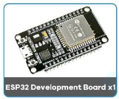
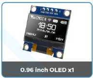
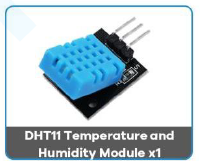
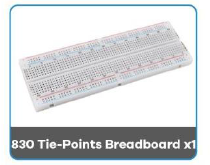

Liste du matériel nécessaire pour réaliser le projet IoT avec ESP32.




Schéma de connexion des composants à la carte ESP32.
Programme Arduino permettant de mesurer la température à l’aide du capteur DHT11. L’écran s’active automatiquement lorsque le “mode actif” est enclenché afin d’afficher les valeurs de température (T) et d’humidité (H).
📥 Télécharger le fichier Arduino (.ino)Programme MicroPython transformant l’ESP32 en serveur IoT, assurant l’enregistrement des données au format CSV et l’affichage sur écran OLED des mesures de température (T), d’humidité (H) ainsi que de l’intensité du signal Wi-Fi (RSSI). Le système fonctionne en alternant entre un mode veille (“sleep mode”) et un mode actif (“active mode”).
📥 Télécharger le fichier MicroPython (.py)